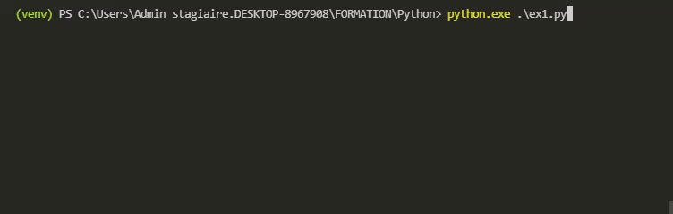
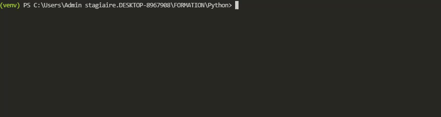
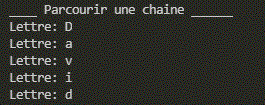
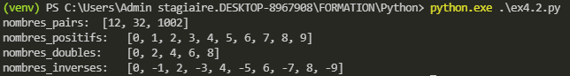
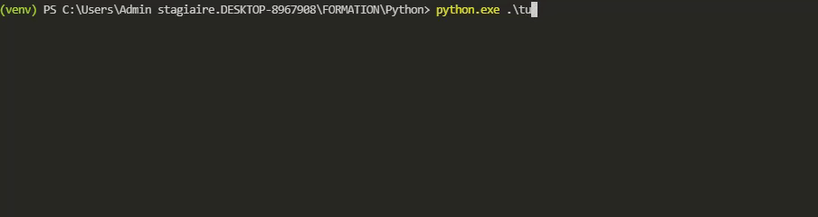
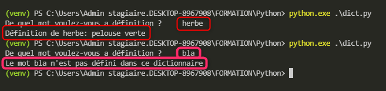
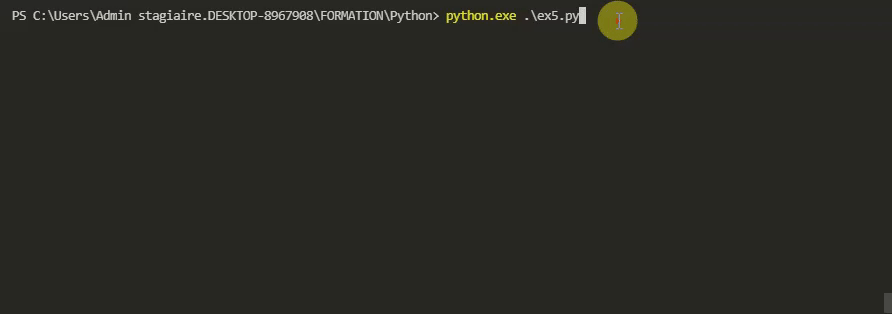
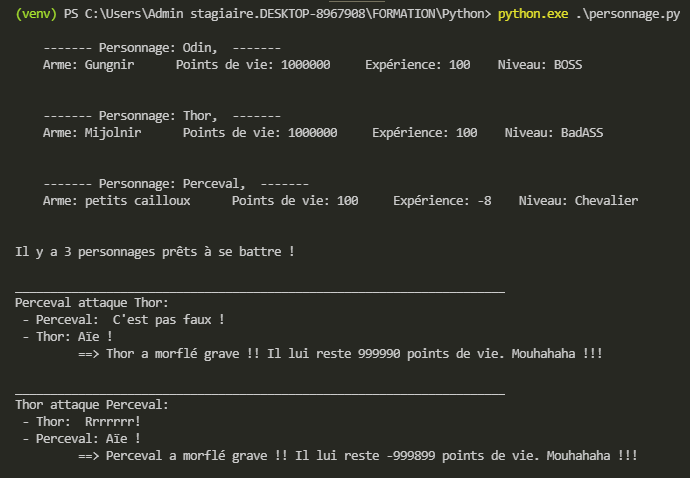
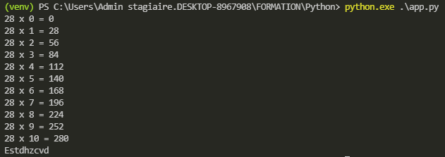

2021-07-26
Formateur:
Mail: ylesueur@dawan.fr
Document: Formation_Python_init_appro_V3.pdf
Framapad: https://mensuel.framapad.org/p/python-26
W3School: https://www.w3schools.com/python/
Un environnement virtuel est un environnement isolé de votre système. On va créer un environnement virtuel pour chaque projet python. Ainsi chaque projet python aura sa propre version de python et ses propres modules.
odin@BBG58Y2:/mnt/c/Users/Admin stagiaire.DESKTOP-8967908/FORMATION/Python$ tree -L 1 venv-project1/
venv-project1/
├── Include
├── Lib
├── Scripts
└── pyvenv.cfg
3 directories, 1 filePour assurer l’intégrité du code Python on installe pylint dans l’environnement virtuel:
Syntaxe de base, en interprétation directe et en script
Déclarer des variables en Python, types internes et leur utilisation
Une variable c’est une zone mémoire dans laquelle on peut stocker des informations. Par exemple: le nom de l’utilisateur, l’age etc…
Il y a plusieurs types de variables en python:
Chaîne de caractères (string)
Numeriques (int, float, complex)
Booléen (bool)
Les types sont implicites et une variable peut changer à n’importe quel moment.
On ne peut pas faire d’opération entre les types différents types.
Il y a des règles à respecter dans le nommage des variables:
le nom d’une variable ne peut contenir que des lettres, chiffres et des underscores ( _ ).
le nom d’une variable ne peut pas commencer par un chiffre
le nom d’une variable est sensible au majuscule. Age, AGE et AgE sont 3 variables différentes.
On ne peut pas utiliser de mot clefs python pour créer nos variables.
https://www.w3schools.com/python/python_ref_keywords.asp
PEP 8 (Python Enhancements Proposals): https://www.python.org/dev/peps/pep-0008/#naming-conventions
Le nom des variables en snake_case + minuscule, exemple: nom_de_la_variable
Le nom des pseudo-constantes en snake_case + Majuscules: NOM_DE_LA_CONSTANTE
Une variable qui commence par un _, est une variable privée
Toujours avoir des noms de variables explicites (on évite les abréviations).
# un commentaire, cette ligne est ignorée par python
prenom = "Charles" # str
age = 15 # int
c = 15j # complex
pi = 3.14 # float
erreur = True # bool
# Lors de l'exécution du programme, python va remplacer la variable prenom
# par sa valeur
# print("Charles")
print(prenom)
# Concaténation: Ajoute une chaîne de caractères à la suite d'une autre.
print("Salut" + "Tout le monde")
# print("La variable prénom: " + "Charles")
# print("La variable prénom: Charles")
print("La variable prénom: " + prenom)
# print("La variable age: " + age) # <- Erreur, on ne peut pas concatener une
# chaîne de caracteres avec un autre type.
# La fonction str(): permet de créer une nouvelle chaîne de caractères à partir
# d'une variable d'un autre type.
# print("La variable age: " + str(15))
# print("La variable age: " + "15")
# print("La variable age: 15")
print("La variable age: " + str(age))
# variable-quelque = 5 <- erreur, nom invalide
# 5variable = "salut" <- erreur, nom invalide
va5dsd3d52 = "salut"
# print(Age) <- erreur, notre variable n'a pas de majuscule
# and = "Salut"
MAX_SCREEN = 1280
VITESSE_LUMIERE = 300_000
prenom = "Salut"
print("La variable prénom: " + prenom)
# _privee = "salut"
# print(_privee)
# En python simple ou double quote, aucune importance
nom = 'Doe' # str
a = 0.99 # float
a = .99 # float
# b = 0.99
b = aa = "2"
b = "3"
c = a + b # concatenation
print(c)
print( type(c) )
# ---------------------------
# | str + str = concatenation |
# | str + number = Erreur |
# | number + number = addition|
# ---------------------------int(a) permet de transformer une chaîne de caractère en nombre entier.
print("\t---- Addition ---")
resultat = nombre + nombre2
print("Resultat: " + str(resultat))
# Si on a encore besoin de la variable résultat, on peut créer un nouvelle variable
resultat2 = resultat + 2
print("Resultat2: " + str(resultat2))
# Sinon on peut écraser la valeur précédente
# resultat = 5 + 2
# resultat = 7
resultat = resultat + 2
print("Resultat: " + str(resultat))
# resultat = resultat + 2
# resultat = 7 + 2
# resultat = 9
resultat += 2
print("Resultat: " + str(resultat))print("\t---- Soustraction ---")
resultat = nombre - nombre2
print("Resultat: " + str(resultat))
resultat = resultat - 2
print("Resultat: " + str(resultat))
resultat -= 2
print("Resultat: " + str(resultat))print("\t---- Mutliplication ---")
# Sur chaine de caractères, on multiplie la concatenation.
resultat = nombre * nombre2
print("Resultat: " + str(resultat))
resultat = resultat * 2
print("Resultat: " + str(resultat))
resultat *= 2
print("Resultat: " + str(resultat))print("\t---- Division ---")
# La resultat de la division est toujours un nombre à virgule.
resultat = nombre / nombre2
print("Resultat: " + str(resultat))
resultat = resultat / 2
print("Resultat: " + str(resultat))
resultat /= 2
print("Resultat: " + str(resultat))
print("\t---- Puissance ---")
resultat = nombre ** 3 # 2³
print("Resultat: " + str(resultat))
resultat = resultat ** 2 # 2²
print("Resultat: " + str(resultat))
resultat **= 6 # 64^6
print("Resultat: " + str(resultat))
print("\t---- Division Entière ---")
resultat = 11 // 2 # 5 et il reste 1
print("Resultat: " + str(resultat))
resultat = resultat // 2
print("Resultat: " + str(resultat))
resultat //= 2
print("Resultat: " + str(resultat))print("\t---- Modulo ---")
# Le modulo c'est le reste d'une division entiere (euclidienne).
resultat = 11 % 2 # 5 et il reste 1 <- modulo
print("Resultat: " + str(resultat))
resultat = 11 % 4 # 11 // 4 = 2 et il reste 3 <- modulo
print("Resultat: " + str(resultat))
resultat %= 2
print("Resultat: " + str(resultat))
# 12 % 2 = 6 et il reste 0 <- le nombre pair
# 13 % 2 = 6 et il reste 1 <- le nombre est impair
# 14 % 2 = 7 et il reste 0
# on ne peut faire 14 % 2 = 3 et il reste 8 <- impossible car on peut encore le divisernombre = 7
nombre2 = 5
resultat = nombre > nombre2 # Une comparaison renovie toujours vrai ou faux.
print("Est-ce que nombre est strictement superieur à nombre2 ? " + str(resultat))
resultat = nombre >= nombre2
print("Est-ce que nombre est superieur ou égal à nombre2 ? " + str(resultat))
resultat = nombre < nombre2 # Une comparaison renovie toujours vrai ou faux.
print("Est-ce que nombre est strictement inferieur à nombre2 ? " + str(resultat))
resultat = nombre <= nombre2
print("Est-ce que nombre est inferieur ou égal à nombre2 ? " + str(resultat))
nombre = 5
nombre2 = 5
# = : affectation
# == : comparaison
resultat = nombre == nombre2
print("Est-ce que nombre est égal à nombre2 ? " + str(resultat)) prenom = "Anne"
prenom2 = "David"
resultat = prenom != prenom2
print("Est-ce que prenom est égal à prenom2 ? " + str(resultat))print("----- Bloc conditionnel ----- ")
# Si l'age de l'utilisateur est inferieur à 18, alors on affiche le message
# "vous ne pouvez pas louer de voiture"
age = 17
if age < 18:
#bloc d'instructions
print("vous ne pouvez pas louer de voiture")
print("On continue")
# Si l'age de l'utilisateur est inférieur à 18, alors on affiche le message
# "vous ne pouvez pas louer de voiture"
# Sinon (dans tous les autres cas), on affiche le message
# "Quel modèle voulez-vous ?"
if age < 18:
print("vous ne pouvez pas louer de voiture")
else:
print("Quel modèle voulez-vous ?")
if age < 18:
print("Reduction -18 ans")
# else if
elif age < 25:
print("Reduction jeune")
else:
print("Pas de réduction")age = 22
# Si age compris entre 18 et 25 ans
if (age >= 18 and age <= 25):
print ("Vous avez entre 18 et 25 ans")L’un ou l’autre mais pas les deux
age = 17
derogation = True
if (age >= 18 or derogation == True):
print ("Vous avez au moins 18 ans OU une dérogation.")not (NON): Inverser le résultat d’un booleen
error = False
print(error) # False
print(not error) # True
# off = False, on = True
bouton_on_off = False
if bouton_on_off == False:
bouton_on_off = True
else:
bouton_on_off = False
# bouton_on_off = not False
# bouton_on_off = True
bouton_on_off = not bouton_on_off
# bouton_on_off = not True
# bouton_on_off = False
bouton_on_off = not bouton_on_off
error = False
# if error == True:
if error:
print("Il y a une erreur, on quitte.")
# if error == False:
# if not False:
# if True:
if not error:
print("Il n'y a pas d'erreur, on peut continuer")print(" Déclaration de variables ")
# Déclarer une variable qui s'appellera 'nb' et contiendra le nombre entier 13.
nb = 13
print("La variable nb est de type: ", type (nb))
# déclarer une variable 'nb2' qui, contiendra le nombre flottant (a virgule) 15,5
nb2 = 15.5
print("La variable nb2 est de type: ", type (nb2))
# déclarer une variable 'b', qui prendra la valeur : true
b = True
# déclarer une variable 'language' qui aura pour valeur la chaîne de caractères 'python'.
language = "python"
# déclarer une variable 'z' qui aura la même valeur que nb, sans faire z = 13
z = nb
# le message 'hello world' si nb est supérieur ou égal à 4
if nb >= 4:
print("Hello World ^^")
print(" TP Mini Calculatrice ")
# demander à l'utilisateur de saisir un 1er nombre
nb1 = int(input ("Saisissez un premier nombre: "))
# demander à l'utilisateur de saisir un 2ème nombre
nb2 = int(input ("Saisissez un deuxième nombre: "))
# additionner les nombres et afficher le résultat
resultat_addition = nb1 + nb2
print("Le résultat de :", nb1, "+", nb2, "=", resultat_addition )print(" TP: Convertir des pouces en centimetres ")
# TP: Convertir des pouces en centimetres
# demander à l'utilisateur de saisir des pouces
pouces = float(input ("Saisissez le nombre de pouces: "))
# 1" (1 pouce) = 2,54 centimètres
# https://www.pouce-cm.fr/
centimetres = 2.54 * pouces
print (pouces, "pouces est égal à :", centimetres, "centimètres")print(" TP: Convertir des heures en minutes ")
# TP: Convertir des heures en minutes
# demander à l'utilisateur de saisir des heures
heures = int(input ("Saisissez un nombre d'heures (entier): " ))
# demander à l'utilisateur de saisir des minutes
minutes = int(input("Saississez un nombre de minutes (entier): "))
# convertir les heures & minutes en minutes (ex: 1h30 = 90 minutes)
minutes_uniquement = heures * 60 + minutes
print ("Résultat uniquement en minutes: ", minutes_uniquement)print(" TP: Convertir des degres Celcius en degrès Fahrenheit")
# TP: Convertir des degres Celcius en degrès Fahrenheit
# https://www.metric-conversions.org/fr/temperature/fahrenheit-en-celsius.htm
# demander à l'utilisateur de saisir des degres celcius
degrees_celsius = float(input("Saisissez une température en °C: "))
# convertir les °C en °F
degrees_fahrenheit = degrees_celsius * 1.8 +32
print (degrees_celsius, "°C est égal à :", degrees_fahrenheit, "Fahrenheit")Sujet:
Afficher un message à l’utilisateur pour savoir s’il souhaite 1- Convertir des pouces en centimètres 2- Convertir des centimètres en pouces 3- Quitter Si l’utilisateur saisit 1: * Demander a l’utilisateur de saisir un nombre: “Nombre de pouces:” * on convertit * on affiche le resultat Si l’utilisateur saisit 2: * Demander a l’utilisateur de saisir un nombre: “Nombre de centimètre:” * on convertit * on affiche le resultat Sinon on affiche: * Je n’ai pas compris
print(" TP: Afficher un message à l'utilisateur pour savoir s'il souhaite...")
print ("1. Convertir des pouces en centimètres ")
print ("2. Convertir des centimètres en pouces")
print ("3. Quitter")
choix = int(input ("Que voulez-vous faire ? "))
if choix == 1:
pouces = float(input ("Saisissez le nombre de pouces: "))
centimetres = 2.54 * pouces
print (pouces, "pouces est égal à :", centimetres, "centimètres")
elif choix == 2:
centimetres = float(input ("Saisissez le nombre de centimètres: "))
pouces = centimetres / 2.54
print (centimetres, "centimètres est égal à :", pouces, "pouces")
# elif choix == 3:
else:
print("Je n'ai pas compris :(")
Sujet:
En partant d’une heure et de minutes données
ex: heure = 2 et minutes = 45
Si on ajoute 30 minutes, au minutes, on obtient 3h15
print(" TP: Bonus")
heures = int(input ("Saisissez un nombre d'heures (entier): " ))
minutes = int(input("Saississez un nombre de minutes (entier): "))
minutes_add = int(input("Saisissez un nombre de minutes à rajouter (entier): "))
minutes_uniquement = heures * 60 + minutes + minutes_add
float(minutes_uniquement)
heures_resultat = minutes_uniquement // 60
minutes_resultat = minutes_uniquement % 60
if heures_resultat > 24:
jours_resultat = heures_resultat // 24
heures_resultat_modulo = heures_resultat % 24
print("Résultat en jour, heures, minutes: ")
print (" ", jours_resultat, "jour(s)", heures_resultat_modulo, "heure(s) et", minutes_resultat, "minute(s)")
else:
print ("Résultat en heure et minutes: ")
print (" ", heures_resultat, "heure(s) et",minutes_resultat, "minute(s)")

On peut formater les données directement dans le programme:
age = 64
prenom = "Maude"
print("Age: " + str(age) + ", prenom: " + prenom)
# print("Age =", age)
# fstring (Format String): à partir python 3.6
print(f"Age: {age}, prenom: {prenom}")
# A partir de python 3
print("Age: {}, prenom: {}".format(age, prenom))
# Avant python 3
print("Age: %d, prenom: %s" % (age, prenom))
rue = "1 rue bidon"
code_postal = 75015
adresse = rue + ',' + str(code_postal)
print(adresse)
adresse = f"{rue},{code_postal}"
print(adresse)Utiliser les boucles et tests pour réaliser des algorithmes.
Exemple avec un compteur:
compteur = 1
while compteur <=10:
print (f"Ligne {compteur}: Je ne dois pas recopier sans comprendre")
compteur = compteur + 1
print("____ Parcourir une chaine ______")
prenom = "David"
# On commence toujours à 0
print("Lettre: " + prenom[0] )
print("Lettre: " + prenom[1] )
compteur = 0
while compteur < 5:
print("Lettre: " + prenom[compteur] )
compteur += 1
print("____ Parcourir une chaine avec un for ______")
# La boulce for est plutôt utilisée pour parcourir les séquences.
# Elle permet de parcourir automatiquement la chaine de caracteres
# du début jusqu'à la fin. Pour chaque tour de boucle si la variable
# 'lettre' n'existe pas elle sera créée, sinon on ecrase la valeur
# précédente par la nouvelle valeur
# for ma_variable in prenom:
# print(ma_variable)
for lettre in prenom:
print("Lettre: " + lettre)
print("--- Pour aller plus loin ----")
for lettre in prenom:
print("Lettre: " + lettre)
if lettre == 'qwqw':
break # <- quitte la boucle même si elle n'est pas finie.
if lettre == " ":
continue # passe au prochain tour de boucle sans executer ce qu'il y a en dessous
else:
print("à la fin de la boucle.")
del lettre # supprime la variable lettre
# for nombre in range(10):
for nombre in range(1, 11): # suite de nombre de 1 jusqu'à 11 non inclus
print(f"Ligne {nombre}: Je ne dois pas recopier sans comprendre")Exercice:
choix = 0
while choix != 2:
print ("""
Que voulez-vous faire ?
1. Convertir
2. Quitter
""")
choix = input("Votre choix: ")
if choix == "1":
heures = input("Saisir des heures: ")
minutes = input("Saisir des minutes: ")
heures = int(heures)
minutes = int(minutes)
resultat = heures * 60 + minutes
print(f"{heures}h{minutes} = {resultat} minutes")
# choix = 0
elif choix >= "3":
print ("Je n'ai pas compris")
else:
print ("Au revoir")
breakSe servir des tableaux, algorithmes divers de traitement de données massives Types de données et opérations avancées (ensembles, dictionnaires,ordonnancement…) Gestion des exceptions
Les fonctions permettent de factoriser du code Les variables stockent une valeur Les fonctions stockent des instructions
Un exemple:
# Création/Définition de la fonction
def hello():
# bloc d'instructions
print("Hello")
print("Tout")
print("Le")
print("Monde")
# Il faut appeller la fonction pour qu'elle s'execute.
hello()
# ...
hello()Un autre exemple:
# Pour un élève trop souvent puni, on serait obligé de copier/coller les boucles.
def faire_punition_simple():
compteur = 1
while compteur <= 10:
print(f"Ligne {compteur}: Je ne dois pas recopier sans comprendre")
# compteur += 1
compteur = compteur + 1 # CTRL + C: pour arrêter une boucle infinie
faire_punition_simple()
print("On continue")
faire_punition_simple()Exemple:
def faire_punition(combien_de_fois):
print (f"Combien de fois: " {combien_de_fois})
compteur = 1
while compteur <= combien_de_fois:
print(f"Ligne {compteur}: Je ne dois pas recopier sans comprendre.")
compteur += 1
# Faire punition 10 fois
faire_punition(10)
# Faire punition 15 fois
faire_punition(15)
# Faire punition 20 fois
faire_punition(20)On peut définir plusieurs paramètres:
def faire_punition_multi_params(combien_de_fois, message):
print(f"Combien de fois: {combien_de_fois}")
print(f"{message=}")
compteur = 1
while compteur <= combien_de_fois:
print(f"Ligne {compteur}: {message}")
compteur += 1
faire_punition_multi_params(15, "Je ne dois pas faire ça")
faire_punition_multi_params(3, "Je ne dois pas faire ci")Exemple avec input:
# Définition fonction paramètre avec input
def faire_punition_input():
combien_de_fois = int(input(f"Combien de fois: "))
# print (f"Combien de fois: {combien_de_fois}")
compteur = 1
while compteur <= combien_de_fois:
print(f"Ligne {compteur}: Je ne dois pas recopier sans comprendre.")
compteur += 1
# Appel fonction paramètre avec input
faire_punition_input()# Faire une fonction qui affiche 'Hello World !'
def say_hello():
print('Hello World !')
# Faire une fonction qui prend un paramètre 'prenom' et affiche Bonjour suivi du prénom
def say_hello_you(prenom):
print(f"Bonjour {prenom} !")
# Faire une fonction qui affiche la multiplication de 2 nombres passés en paramètres
def multiplication(nombre, nombre2):
# resultat = nombre * nombre2
print(f"{nombre} x {nombre2} = {nombre * nombre2}")
multiplication(5, 7)
# Faire une fonction qui renvoie la soustraction de 2 nombres passés en paramètre
def soustraction(nombre, nombre2):
# resultat = nombre - nombre2
return (nombre - nombre2)
resultat = soustraction(7, 5)
print(f"{resultat=}")
# Faire une fonction qui affiche la table de multiplication d'un nombre passé en paramètre
def afficher_table(nombre, max=10):
compteur = 0
while compteur <= max:
resultat = nombre * compteur
print(f"{nombre} x {compteur} = {resultat}")
compteur += 1
# for multiplicateur in range(11):
# print(f"{nombre} x {multiplicateur} = {multiplicateur * nombre}")
afficher_table(5)
afficher_table(5, 20)
# Faire une fonction qui convertit des heures en minutes, elle prend 2 arguments: heures et minutes.
# exemple: how_many_minutes(heure, minutes): #...
# exemple d'appel: how_many_minutes(1,30) <- renvoie 90
def how_many_minutes(heures, minutes):
return heures * 60 + minutes
resultat = how_many_minutes(1, 30)
print(f"{resultat=} minutes")
# Faire une fonction qui cherche une lettre dans une chaine de caractères et qui retourne "trouvée" si la lettre a été trouvée
# et 'aucun résultat' dans le cas contraire.
# find_char(chaine, lettre) : #...
# exemple d'appel: find_char("Salut tout le monde", 'u') <- cherche la lettre 'u' dans la chaine
# etape 1: faire la fonction find_char(chaine,letter)
# indice: une boucle et un if sont necessaires
def find_char(chaine, lettre_recherche):
compteur = 0
taille_chaine = len(chaine)
while compteur < taille_chaine:
lettre_actuelle = chaine[compteur]
if lettre_actuelle == lettre_recherche:
print("Trouvée")
break
compteur += 1
else:
print("Aucun résultat")
find_char("Salut tout le monde", 'u')
find_char("Salut tout le monde", 'w')
def find_char_for(chaine, lettre_recherche):
for lettre_actuelle in chaine:
if lettre_actuelle == lettre_recherche:
return "Trouvée" # on quitte la fonction
return "Aucun résultat"
print( find_char_for("Salut tout le monde", 'u') )
print( find_char_for("Salut tout le monde", 'w') )
resultat = 'u' in "Salut tout le monde"
print(resultat)
if "u" in "Salut tout le monde":
print("Il y a un u")
# Exercice bonus:
# faire un rot 11
# Un rot est un algorithme qui décale les lettres pour chiffrer un message.
# "Le texte chiffré s'obtient en remplaçant chaque lettre du texte clair original par une lettre à distance fixe, toujours du même côté, dans l'ordre de l'alphabet.
# Pour les dernières lettres (dans le cas d'un décalage à droite), on reprend au début."" Wikipedia
# A + 11 = L
# Z + 11 = K
# "Salut" devient "Dlwfe"
# indice: ord(letter) pour convertir un caractère en nombre (table ASCII)
# indice: chr(ascii) pour convertir du code ASCII en caractère
# indice: il faut parcourir la chaine caractère par caractère et la transformer
# verifier : https://rot13.com/
# table ascii https://fr.wikibooks.org/wiki/Les_ASCII_de_0_%C3%A0_127/La_table_ASCII#Descriptif3
# chiffrement par decalage: https://fr.wikipedia.org/wiki/Chiffrement_par_d%C3%A9calage
def rot11(message):
ROT = 11
MIN_CHAR_UPPER = 65 # A
MAX_CHAR_UPPER = 90 # Z
MIN_CHAR_LOWER = 97 # a
MAX_CHAR_LOWER = 122 # z
hidden_msg = ""
for letter in message:
char = ord(letter) # 83
if (char >= MIN_CHAR_LOWER and char <= MAX_CHAR_LOWER):
hidden_msg += chr((((char - MIN_CHAR_LOWER) + ROT) %
26) + MIN_CHAR_LOWER)
elif (char >= MIN_CHAR_UPPER and char <= MAX_CHAR_UPPER):
# 83 - 65 = 18
# 18 + 11 = 29
# 29 % 26 = 1 et il reste 3
# 3 + 65 = 68 = D
hidden_msg += chr((((char - MIN_CHAR_UPPER) + ROT) %
26) + MIN_CHAR_UPPER)
return hidden_msg
print(rot11("Salut"))
print(rot11("AazZYyBb"))
def rot(chaine):
chaine = chaine.lower()
phrase_codee = ""
for lettre in chaine :
nombre = ord(lettre)
#print(nombre)
clef = 11
nombre2 = nombre + clef
if nombre2 > 123 :
nombre2 = (nombre2 - 122) + 96
#print(nombre2)
code = chr(nombre2)
#print(code)
phrase_codee = str(phrase_codee)+str(code)
print(f"Phrase chiffrée : {phrase_codee}")
rot("Salut")Les listes permettent de regrouper un ensemble de données cohérentes.
Initialisation d’une liste:
Avec des valeurs:
# Les listes permettent de regrouper un ensemble de données cohérents
# Liste de prenoms, liste de notes, liste de courses
# note1 = 1
# note2 = 3
# liste vide
notes = []
print(notes)
notes = [2,6,7,9]
print(notes)
liste = [2,6,7,9, True, "Salut !", [0, 2]]
# On commence toujours à 0
print(f"Première note: { notes[0] }")
print(f"Deuxième note: { notes[1] }")
# notes[4] # il y a 4 notes mais la dernieres est à l'index 3 -> IndexError: list index out of range
taille_notes = len(notes)
print(f"Il y a {taille_notes} notes")
# print(f"Dernière note: { notes[4 - 1] }")
# print(f"Dernière note: { notes[3] }")
print(f"Dernière note: { notes[taille_notes - 1] }")
# Python autorise les index négatifs, on part de la fin de la liste
print(f"Dernière note: { notes[-1] }")
print(f"L'avant dernière note: { notes[-2] }")
# notes[-5] <- il n'y a pas 5 notes
notes[0] = 7
print(notes)
# On ne peut pas faire ca avec les chaine de caractères
# Car les chaine de caractères ne sont pas des sequences modifiables.
prenom = "Anne"
# prenom[2] = 'o' <- TypeError: 'str' object does not support item assignment
liste = [prenom, 'Salut']
print(liste)
print("----- Parcourir une liste -----")
index = 0 # ou i
taille_notes = len(notes)
while index < taille_notes:
note = notes[index]
print(f"Note: {note}")
index += 1
print("Avec un for ")
for note in notes:
print(f"Note: {note}")
print("----- Manipulation d'une liste -----")
# Les listes sont des objets en python.
# Les variables stockent valeur
# Les fonctions stockent un ensemble d'instructions
# Les objets stockent des variables et/ou des fonctions
# Par exemple: une voiture
# Une voiture peut avoir une couleur, une vitesse etc.. (<- variables)
# et des actions (fonctions) : accelerer, freiner, changer de vitesse etc...
prenoms = ["Valentin", "David", "Anne", "Alicia"]
print(prenoms)
# Ajoute "Akim" à la fin de la liste
prenoms.append("Akim")
print(prenoms)
# Inserer à l'index 1, la valeur
prenoms.insert(1, "Loubna")
print(prenoms)
# Supprime le dernier élément de la liste
prenoms.pop()
print(prenoms)
prenoms.pop(2) # Si l'index n'existe pas python souleve une erreur et s'arrete
print(prenoms)
prenoms.remove('Alicia') # Si la valeur n'existe pas python souleve une erreur et s'arrete
# Attention aux maj/min (casse)
print(prenoms)
prenoms.reverse() # Inverse par position
print(prenoms)
prenoms.sort() # Tri par ordre alpha
print(prenoms)
if "John" in prenoms:
prenoms.remove("John")
else:
print("John n'est pas dans la liste")
if "Valentin" in prenoms:
index = prenoms.index("Valentin")
prenoms.pop(index)
else:
print("Valentin")
if 7 <= len(prenoms):
prenoms.pop(7)print("---------- Slicing ---------")
prenoms = ["Erwan", "Margaux", "Chafea", "Anne"]
liste = prenoms[1:3] # Copier les elements de l'index 1 à l'index 3 non inclus
print(liste)
liste = prenoms[0:3] # Copier les elements de l'index 0 à l'index 3 non inclus.
print(liste)
liste = prenoms[:3] # Copier les elements du début à l'index 3 non inclus.
print(liste)
liste = prenoms[:4] # Copier les elements du début à l'index 4 non inclus.
print(liste)
liste = prenoms[:] # Copier les elements du début jusqu'à la fin
print(liste)
liste = prenoms[0:4:2] # Copier les elements du début à l'index 4 non inclusavec un pas (step) 2.
print(liste)
liste = prenoms[::2] # Copier les elements du début jusqu'à la fin avec un pas (step) 2
print(liste)
liste = prenoms[::-1] # Copier les elements du début jusqu'à la fin avec un pas (step) 2
print(liste)Sujet:
Exercice: Faire un programme qui permet d’ajouter ou retirer des produits d’une liste de courses Lorsque le programme demarre, l’utilisateur a le choix entre: 1- Afficher la liste de courses. 2- Ajouter un produit a la liste de courses (chaine de caracteres ex: pomme) 3- Retirer un produit de la liste de course 4- Supprimer toute la liste de courses 5- Quitter le programme
courses = ["pommes", "poires", "bananes"]
choice = "0"
while choice != "5":
if choice == "0":
print ("""
# --------------------- Liste de courses --------------------- #
1. Afficher la liste de courses
2. Ajouter un produit
3. Retirer un produit
4. Supprimer la liste
5. Quitter le programme
""")
choice = input("Que voulez-vous faire ? ")
if choice == "1":
print(courses)
choice = "0"
elif choice == "2":
new_item = input("Saisissez le nom du nouveau produit: ")
new_item = new_item.lower()
courses.append(new_item)
choice = "0"
elif choice == "3":
print(f"""
Liste des courses:
------------------
{courses}
""")
remove_item = input("Quel produit voulez-vous retirer ? (Nom du produit) ")
courses.remove(remove_item)
choice = "0"
elif choice == "4":
print("Supression de la liste de courses")
courses.clear()
choice = "0"
else:
print("Fermeture du programme.")
breakdef get_input_integer(input_message,min, max):
while(True):
print(input_message)
user_input = input()
try:
result = int(user_input)
except Exception:
print("Merci d'entrer un nombre")
continue
if (result < min or result > max):
print("Merci d'entrer un nombre valide")
continue
return result
def say_goodbye():
print("Au revoir")
def print_list_products(list_products):
if len(list_products) == 0:
print("La liste est vide")
else:
print(f"Produits : {', '.join(list_products)}")
def add_product(list_products):
while True:
product_to_add = input("Que voulez-vous ajouter à votre liste de courses ?").lower()
if product_to_add.isspace() or product_to_add == "":
print("Merci d'entrer un produit")
continue
if (list_products.count(product_to_add.strip())) > 0:
print(f"Le produit '{product_to_add}' est déja dans votre liste de courses")
else:
list_products.append(product_to_add.strip())
print(f"Le produit '{product_to_add}' a été ajouté à votre liste de courses")
break
def delete_product(list_products):
while True:
product_to_delete = input("Quel produit voulez-vous supprimer ?").lower()
if product_to_delete.isspace() or product_to_delete == "":
print("Merci d'entrer un produit")
continue
try:
list_products.remove(product_to_delete.strip())
print(f"Le produit '{product_to_delete.strip()}' a été supprimé de votre liste de courses")
except ValueError:
print(f"Le produit '{product_to_delete.strip()}' n'a pas été trouvé dans votre liste de courses")
break
def delete_all_products(list_products):
for product in list_products.copy():
list_products.remove(product)
print("Votre liste de course est désormais vide")
list_products = []
while True:
user_input = get_input_integer("""__________ Menu __________
1- Afficher la liste de courses.
2- Ajouter un produit a la liste de courses
3- Retirer un produit de la liste de course
4- Supprimer toute la liste de courses
5- Quitter le programme
Votre choix ?""", 1, 5)
if user_input == 5:
say_goodbye()
break
if user_input == 1:
print_list_products(list_products)
if user_input == 2:
add_product(list_products)
if user_input == 3:
delete_product(list_products)
if user_input == 4:
delete_all_products(list_products)
input("Faites Entrée")
Comprehension lists:
https://sametmarx.com/python-love-les-listes-en-intention-partie/
https://www.w3schools.com/python/python_lists_comprehension.asp
# Les liste en intention (Comphrension List)
# https://sametmarx.com/python-love-les-listes-en-intention-partie/
#
# Exercice: réduire ces liste a l'aide, des listes en compréhension #
#
nombres = [1, 21, 45, 12, 32, 65, 1002, 109, 83]
nombres_pairs = []
# for i in nombres:
# if i % 2 == 0:
# nombres_pairs.append(i)
# print(nombres_pairs)
nombres_pairs = [ i for i in nombres if (i % 2 == 0) ]
print(f"nombres_pairs: {nombres_pairs}")
# ________________________________________________
# 2 extraire les nombres positifs l'aide, des listes en compréhension #
nombres = range(-10, 10)
nombres_positifs = []
# for i in nombres:
# if i >= 0:
# nombres_positifs.append(i)
nombres_positifs = [ i for i in nombres if (i >= 0) ]
print(f"nombres_positifs: {nombres_positifs}")
# ________________________________________________
# 3
nombres = range(5)
nombres_doubles = []
# for i in nombres:
# nombres_doubles.append(i * 2)
nombres_doubles = [ (i * 2) for i in nombres ]
print(f"nombres_doubles: {nombres_doubles}")
# ________________________________________________
# 4. Si nombre est pair il reste tel quel, si il est impair il devient impair
# 1 devient -1 , 2 devient 2, -5 devient 5
nombres = range(10)
nombres_inverses = []
# for i in nombres:
# if i % 2 == 0:
# nombres_inverses.append(i)
# else:
# nombres_inverses.append(-i)
nombres_inverses = [ -i if (i % 2 != 0 ) else i for i in nombres ]
print(f"nombres_inverses: {nombres_inverses}")

Les tuples sont des listes qui ne sont pas modifiables (lecture seule)
Sur de très grandes quantités de données les tuples sont plus performantes à condition bien sûr que ces données n’est pas besoin d’être modifiées. .prenoms = ("Vincent", "David", "Valentin", "Valentin", "Valentin")
print(prenoms)
print( prenoms[0] )
print( prenoms[2] )
for prenom in prenoms:
print(prenom)
index = prenoms.index("David")
print(f"Index: {index}")
nombre = prenoms.count("Valentin")
print(f'il y a {nombre} fois le prénom "Valentin" dans la liste')# prenom = prenoms[0]
# prenom2 = prenoms[1]
# prenom3 = prenoms[2]
prenom, prenom2, prenom3 = prenoms
print(f"{prenom} est de type {type(prenom)} ")
prenom, prenom2 = "toto", "tata"
prenoms = ("Vincent", "David", "Valentin", "Valentin", "Valentin")
prenom, prenom2, prenom3, *reste = prenoms # rest est de type list
print(reste)
t = tuple(reste) # Transformation de list en tuple
liste_prenoms = list(prenoms) # Transformation de tuple en liste
print(t, liste_prenoms)
Un Dictionnaire est une séquence non-ordonnée.
Avec une association clé/valeur, où la clé est unique.# dictionnnaire = {clef: "valeur", clef2: 'valeur'}
dictionnaire = {
"Ornithorynque": "Animal semi-aquatique très étrange",
"herbe": "pelouse verte",
# "herbe": 'Salut' <- si on fait ca, on écrase la valeur précédente, car la clef existe deja
}
print( dictionnaire["Ornithorynque"] )
print( dictionnaire["herbe"] )
# regroupe un ensemble de caractèristiques
utilisateur = {
"nom": "Doe",
"prenom": "John",
"age": 15
}
print( utilisateur['nom'] )tuple_firstnames = ("David", "Hubert", "Denis", "Marc")
list_ages = [33, 32, 27, 23]
family = {"name":"Debray", "firstname":tuple_firstnames, "age":list_ages}
print(family)
print(family["firstname"][0])
# Recherche dans un dictionnaire
mot = input("De quel mot voulez-vous a définition ? ")
definition = dictionnaire.get(mot)
if definition:
print (f"Définition de {mot}: {definition}")
else:
print(f"Le mot {mot} n'est pas défini dans ce dictionnaire")
print("----- Parcourir un dictionnaire ------")
for clef in utilisateur:
print(f"Clef: {clef}")
print(f"Valeur: { utilisateur.get(clef) }")
print(" =>Uniquement les valeurs ")
# dictionnaire.values() ressemble a une liste mais ce n'est pas une liste
# par contre, on peut facilement convertir en liste.
# Et la boucle for c'est le lire les dict_values
valeurs = list(utilisateur.values())
print(valeurs)
for valeur in utilisateur.values():
print(f"valeur: {valeur}") items()dictionnaire.items() ressemble a une liste mais ce n’est pas une liste par contre, on peut facilement convertir en liste.
Et la boucle for c’est le “lire” les dict_items.
items = list(utilisateur.items())
print(items)
# Fonctionnement basique
print(" => Clef + valeurs ")
for item in utilisateur.items():
# print(item)
clef = item[0]
valeur = item[1]
print(f"Clef: {clef}, valeur: {valeur}")
# Déballage de tuple
for item in utilisateur.items():
# print(item)
clef, valeur = item
print(f"Clef: {clef}, valeur: {valeur}")Ici on déballe le tuple directement dans l’instruction “for”.
###########################################################################################################
# Transformer la liste de courses:
# La liste de courses reste une liste mais on y mettra des dictionnaires dedans.
# un dictionnaire contient: un nom de produit (str) et une quantité (int)
# soit vous transformez la liste de courses en dictionnaire
# soit vous ajouter des dictionnaires dans votre liste
###########################################################################################################
print("""
1- Afficher la liste de courses.
2- Ajouter un produit a la liste de courses
3- Retirer un produit de la liste de course
4- Supprimer toute la liste de courses
5- Quitter le programme
""")
courses = {
"pommes": 10,
"poires": 2
}
continuer = True
# while continuer == True:
while continuer:
choix = input("Que voulez-vous faire ? ")
if choix == "1":
# if courses == []
if not courses:
print("La liste de course est vide")
else:
for produit, quantite in courses.items():
print(f"- { produit.capitalize() } : {quantite} ")
elif choix == "2":
nom_produit = input("Quel est le nom du produit à ajouter ? ").lower()
quantite_produit = input("Combien en voulez-vous ? ")
int(quantite_produit)
courses.update({nom_produit:quantite_produit})
print(f" {quantite_produit} {nom_produit} ont bien été ajouté(es)")
elif choix == "3":
nom_produit = input("Quel est le nom du produit à supprimer ? ").lower()
if nom_produit in courses:
print(f" {courses.get(nom_produit)} {nom_produit} ont bien été supprimé(es)")
courses.pop(nom_produit)
else:
print(f"{nom_produit} n'est pas dans la liste")
elif choix == "4":
courses.clear()
print(f"La liste de courses à bien été vidée.")
elif choix == "5":
print("Au revoir")
continuer = False
else:
print("Je n'ai compris")
POO (fr): Programmation Orientée Objet.
OPP (english): Object Oriented Programmation
# Exemples de gestion de chaînes de caractères
prenom = "David"
print(prenom.lower())
print(prenom.upper())
print( prenom.replace('i', 'iii') )
print( prenom.startswith('D') ) # => bool (True/False)
print( prenom.endswith('.com') ) # => Site web ? (bool)
print( prenom.istitle() ) # Si Tous Les Mots Sont Capitalisés => True (bool)Une classe est un modèle (moule) qui permet de fabriquer nos propres objets.
Une classe se déclare en utilisant le “PascalCase”, la première lettre de chaque mot est une majuscule, tout est attaché.
Dans cet exemple on créer un petit jeu avec des personnages. Pour créer nos personnages on utilise une classe ClassPersonnage.
class ClassPersonnage:
id_character = 0
def __init__(self, name, weapon, health=100, xp=0, rank="noob", warcry="Rrrrrrr!", ouchie=10):
self.name = name
self.weapon = weapon
self.health = health
self.xp = xp
self.rank = rank
self.warcry = warcry
self.ouchie = ouchie
ClassPersonnage.id_character +=1
def fight(self, target):
print("______________________________________________________________________")
print(f"{self.name} attaque {target.name}:")
print(f" - {self.name}: {self.warcry}")
target.health -= self.ouchie
print(f" - {target.name}: Aïe ! ")
print(f"""\t ==> {target.name} a morflé grave !! Il lui reste {target.health} points de vie. Mouhahaha !!!
""")
# Création des personnages
player_1 = ClassPersonnage("Odin", "Gungnir", 1000000, 100, rank="BOSS")
player_2 = ClassPersonnage("Thor", "Mijolnir", 1000000, 100, "BadASS", ouchie=999999)
player_3 = ClassPersonnage("Perceval", "petits cailloux", xp=-8, rank="Chevalier", warcry="C'est pas faux !" )
## Affichage des personnages
tuple_players = (player_1, player_2, player_3)
for player in tuple_players:
print(f"""
------- Personnage: {player.name}, -------
Arme: {player.weapon} Points de vie: {player.health} Expérience: {player.xp} Niveau: {player.rank}
""")
# Print IDs
print(f"""
Il y a {ClassPersonnage.id_character} personnages prêts à se battre !
""")
# C'est ici que ça bastonne ^^
player_3.fight(player_2)
player_2.fight(player_3)
Un module: c’est un fichier qui contient du code (classes, fonctions, etc..)
Par défaut, python ne charge pas toutes les fonctions directement pour éviter de ralentir le programme au demarrage
On a plein d’autre fonctions qui se trouve dans des modules. Il suffit d’importe le module pour utiliser les fonctions qu’il contient.
Documentation: https://realpython.com/python-import/#absolute-and-relative-imports
Dans le fichier mymodule.py on renseigne nos fonctions:
# File: mymodule.py
def afficher_table(nombre, max=10):
compteur = 0
while compteur <= max:
resultat = nombre * compteur
print(f"{nombre} x {compteur} = {resultat}")
compteur += 1
def rot11(message):
ROT = 11
MIN_CHAR_UPPER = 65 # A
MAX_CHAR_UPPER = 90 # Z
MIN_CHAR_LOWER = 97 # a
MAX_CHAR_LOWER = 122 # z
hidden_msg = ""
for letter in message:
char = ord(letter) # 83
if (char >= MIN_CHAR_LOWER and char <= MAX_CHAR_LOWER):
hidden_msg += chr((((char - MIN_CHAR_LOWER) + ROT) %
26) + MIN_CHAR_LOWER)
elif (char >= MIN_CHAR_UPPER and char <= MAX_CHAR_UPPER):
# 83 - 65 = 18
# 18 + 11 = 29
# 29 % 26 = 1 et il reste 3
# 3 + 65 = 68 = D
hidden_msg += chr((((char - MIN_CHAR_UPPER) + ROT) %
26) + MIN_CHAR_UPPER)
return hidden_msgPuis dans le fichier app.py, on importe puis on appelle nos fonctions:
# File: app.py
from mymodule import afficher_table,rot11
afficher_table(28)
print(rot11("This works !"))
Avec Python on peut installer d’autres modules très puissant, par exemple pandas.
# File: install.py
# _________________
# https://pypi.org/
# pip install monpackage
# pip install -r requirements.txt
# pip list: pour voir tous ce qui est installé
import pandas
import os
os.system('pip install -r requirements.txt')Avec dans le fichier requirements.txt:
Lorsque python rencontre une erreur, on dit que python leve une exception Si on ne traite pas cette exceptions, le programme quitte sur une erreur.
1/0 print(“On continue”)
pour capturer une erreur, on commence par faire un bloc try.
On essaye de faire une instruction qui peut generer une erreur
Et on met le bloc except: s’il y a une erreur, on explicite le traitement.
try/except:
try:
1 / 0
except:
print("La division par 0 n'est pas possible")
print("On continue")
nombre = input("Saisir un nombre: ")
try:
nombre = int(nombre)
resultat = 5 / nombre
except ZeroDivisionError:
print("La division par 0 n'est pas possible")
except ValueError:
print("Vous devez saisir un nombre")
# python créer automatiquement une instance de la class Exception.
# on peut recuperer cette instance grace au mot clef 'as' et lui donner le nom que l'on veut
except Exception as erreur:
print("Autre erreur: ", erreur)
print("Trace: ", erreur.with_traceback())
else:
print("Super ! tout s'est bien passé")
finally:
print("Peu ce qu'il arrive, on passe ici ! ")
nombre = "0"
while ((not nombre.isnumeric()) or nombre == "0"):
nombre = input("Saisir un nombre: ")
else:
nombre = int(nombre)# File: ecriture.py
# _________________
# Ouvrir un fichier
fichier = open('/chemin/message.txt', 'w', encoding="utf-8")
print(fichier)
fichier.write('Salut tout le monde !')
fichier.close() # Fermeture du fichierLa fonction open peut prendre plusieurs paramètres:
w: write ou r: readencoding="utf-8"write, si le fichier n’existe pas, il sera créé.
Récupérer le répertoire courant:
Gérer le nom du fichier:
import os
import sys
print( sys.getsizeof(os) )
# Pour ouvrir un fichier on utilise la fonction open()
# Cette fonction prend plusieurs paramètres dont:
# - le chemin vers le fichier
# - le mode de lecture 'w' : write, 'r': read, append/ajout 'a'
# - encodage
# En mode ecriture: si le fichier n'existe pas il sera créé
# /!\ en mode 'w' le fichier est effacé à l'ouverture
fichier = open('message.txt', 'w', encoding="utf-8")
fichier.write('Salut tout le monde ! é !')
fichier.close()
# GET Current Work Directory
print("GET Current Work Directory: " + os.getcwd() )
# chemin_fichier = os.getcwd() + "/10-fichiers/01-text/message.txt"
# os.path.join() : concatène le chemin avec les bons separateurs
chemin_fichier = os.path.join(
os.getcwd(),
"10-fichiers",
"01-text",
"message.txt"
)
print(f"{chemin_fichier=}")
fichier = open(chemin_fichier, 'a', encoding="utf-8")
fichier.write('Salut tout le monde ! é !\n') # \n : retour a la ligne
fichier.close()
chemin_dossier = os.path.join(
os.getcwd(),
"10-fichiers",
"01-text",
"messages"
)
if not os.path.exists(chemin_dossier):
os.mkdir(chemin_dossier) # creation du dossier
else:
print("Le dossier existe déjà")
chemin_dossier = os.path.join(
os.getcwd(),
"10-fichiers",
"01-text",
"messages",
"john",
"29-07-2021"
)
if not os.path.exists(chemin_dossier):
os.makedirs(chemin_dossier) # creation des intermediaires s'ils n;existent pas
else:
print("Le dossier existe déjà")
# exist_ok=True : Si les dossiers existent, on ignore la création
# os.makedirs(chemin_dossier, exist_ok=True)
# Chemin du fichier actuelle
print("File: " + __file__)
# dirname() : recupere le dernier dossier du chemin indiqué
chemin_dossier = os.path.dirname(__file__)
chemin_fichier = os.path.join(chemin_dossier, 'extrait.txt')
fichier = open(chemin_fichier, 'a', encoding="utf-8")
fichier.write('Salut tout le monde ! é !\n') # \n : retour a la ligne
fichier.close()import os
# /home/user/Bureau/python-26-07-2021/10-fichiers/01-text
chemin_dossier = os.path.dirname(__file__)
# /home/user/Bureau/python-26-07-2021/10-fichiers/01-text/extrait.txt
chemin_fichier = os.path.join(chemin_dossier, 'extrait.txt')
try:
fichier = open(chemin_fichier, 'r', encoding="utf-8")
contenu = fichier.read()
except OSError as erreur:
print(erreur.with_traceback())
except Exception as erreur:
print(erreur.with_traceback())
else:
print(contenu)
# Context Manager: a la fin du bloc d'instructions, le context manager s'occupe
# de liberer les ressources allouées à l'ouverture du fichier.
try:
with open(chemin_fichier, 'r', encoding="utf-8") as fichier:
contenu = fichier.read()
except OSError as erreur:
print(erreur.with_traceback())
except Exception as erreur:
print(erreur.with_traceback())
else:
print(contenu)Dans un fichier .json on défini les informations à importer:
[
{
"id": 1,
"name": "Leanne Graham",
"username": "Bret",
"email": "Sincere@april.biz",
"address": {
"street": "Kulas Light",
"suite": "Apt. 556",
"city": "Gwenborough",
"zipcode": "92998-3874",
"geo": {
"lat": "-37.3159",
"lng": "81.1496"
}
},
"phone": "1-770-736-8031 x56442",
"website": "hildegard.org",
"company": {
"name": "Romaguera-Crona",
"catchPhrase": "Multi-layered client-server neural-net",
"bs": "harness real-time e-markets"
}
}Puis dans notre code on importe les informations:
import json
import os
chemin_dossier = os.path.dirname(__file__)
chemin_fichier = os.path.join(chemin_dossier, 'users.json')
try:
with open(chemin_fichier, 'r', encoding='utf-8') as fichier:
content = json.load(fichier)
print(f"{content=}, type: { type(content) }")
except json.decoder.JSONDecodeError as jerreur:
print(jerreur)
for utilisateur in content:
# print(utilisateur) #dict
# print( type(utilisateur) )
print("Nom utilisateur: " + utilisateur.get("name") )
print("Rue: " + utilisateur.get("address").get('street') )Pour écrire dans un fichier .json on fera:
import json
import os
chemin_dossier = os.path.dirname(__file__)
chemin_fichier = os.path.join(chemin_dossier, 'sortie.json')
fichier = open(chemin_fichier, 'w', encoding='utf-8')
donnee = {
"Ornithorynque": "Animal semi-aquatique très étrange",
"herbe": "pelouse verte",
}
json.dump(donnee, fichier, indent=2)
fichier.close()Contenu du fichier sortie.json:
Ctrl+/: commente/décommente une ou plusieurs lignes
Ctrl+